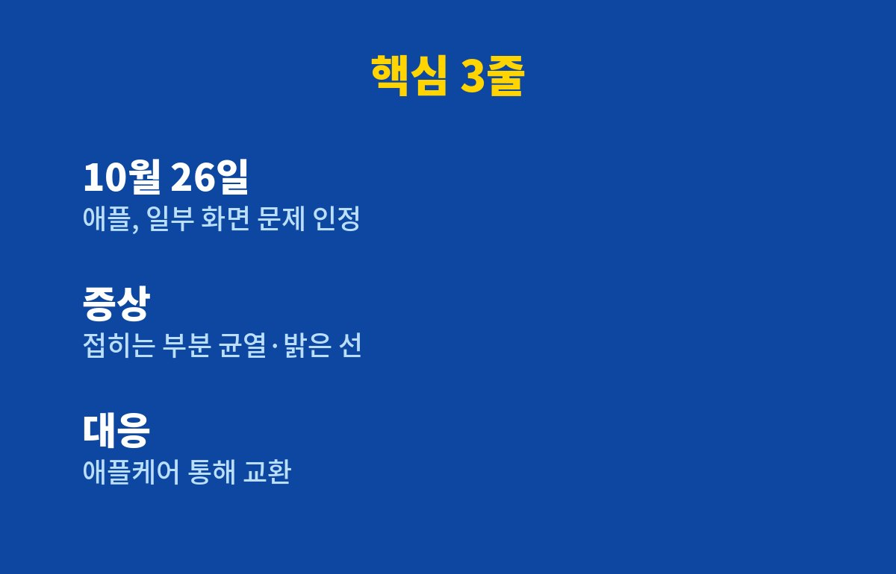

아이폰 듀오 화면 균열 문제, 애플이 결국 인정했습니다. 로이터·블룸버그 보도에 따르면 애플은 10월 26일 일부 아이폰 듀오에서 안쪽 화면 문제가 생겼다고 인정하고 교환을 해 주고 있어요.
329만원 주고 산 폰인데, 보증 끝나고 안쪽 화면이 깨지면 수리비만 164만9천원입니다. 지금 아이폰 듀오 쓰고 있다면 뭘 확인해야 할까요?
아이폰 듀오는 애플의 첫 폴더블폰이에요. 10월 16일 온라인 사전 주문, 10월 23일 출시. 그런데 출시 며칠 만에 이상한 후기가 올라오기 시작했죠.
사용자들이 말한 증상은 이렇습니다. 산 지 몇 시간~며칠 만에 안쪽 화면 접히는 부분 근처에 금이 가거나 밝은 선이 생긴다는 것. 화면이 제대로 안 켜진다는 사람도 있고, 펼칠 때 평소와 다른 뻑뻑함이나 소리가 난다는 얘기도 나왔어요. 블룸버그는 구매자 6명 이상의 사진과 애플 지원 기록을 직접 확인했다고 합니다.

애플은 "일부 소수 제품이고, 이런 문제는 초기에 나타나는 경향이 있다"는 입장이에요. 하지만 몇 대가 문제인지, 정확한 원인이 뭔지는 밝히지 않았습니다.
수리 전문 업체 아이픽스잇(iFixit)은 분해 분석에서 화면 밑 가운데 지지대가 접힐 때 충분히 안 움직여서 특정 부위에 압력이 몰리는 것 같다고 봤어요. 쉽게 말해 접을 때마다 한 곳만 꾹꾹 눌린다는 얘기죠. 다만 이건 가설일 뿐 확정이 아닙니다. 특정 생산분 문제인지, 설계 자체 문제인지도 아직 몰라요.
참고로 삼성도 2019년 첫 갤럭시 폴드 때 비슷한 화면 문제로 출시를 미루고 설계를 고친 적이 있어요. 첫 폴더블의 숙명일까요.
여기가 진짜 무서운 부분입니다. 국내 보증 외 수리 예상 비용을 보면 정신이 번쩍 들어요.
| 구분 | 아이폰 듀오 | 갤럭시 Z 폴드8 |
|---|---|---|
| 256GB 가격 | 329만원 | 227만8,100원 |
| 512GB 가격 | 359만원 | 253만1,100원 |
| 1TB 가격 | 419만원 | 315만2,600원 |
| 무게 | 254g | 201g |
| 안쪽 화면 수리(보증 외) | 164만9,000원 | - |
안쪽 화면 수리비가 기본 모델 가격의 절반 수준이에요. 바깥 화면은 55만9천원, 기타 파손은 246만9천원. 폰 하나 값이 또 나가는 셈이죠.
1. 화면부터 꼼꼼히 보기. 밝은 화면을 띄우고 접히는 부분 근처에 선이나 금이 없는지 확인하세요. 펼칠 때 소리나 걸림도 체크.
2. 이상하면 바로 애플 지원에 접수. 보도에 따르면 애플은 애플케어+ 가입 여부와 상관없이 문제 제품을 교환해 주고 있어요. 증상 사진과 영상은 꼭 찍어 두세요.
3. 교환 재고 없다면 선택지 확인. 국내에선 교환 재고가 부족해 환불을 안내받은 사례도 있다고 해요. 교환 기간이나 결함 판정 기준은 아직 공개되지 않았으니, 상담 내용은 기록으로 남겨 두는 게 안전합니다.
아직 안 샀다면? 굳이 첫 물량에 뛰어들 필요는 없어 보여요. 원인이 밝혀지고 대응이 정리된 뒤에 사도 늦지 않거든요.
여러분이라면 지금 아이폰 듀오 사시겠어요, 한 템포 쉬시겠어요? 애플 공식 원인 발표가 나오면 바로 정리해 드릴게요. 구독해 두시면 놓치지 않습니다!
기사·공식 발표 기준이며 출시·가격 정보는 바뀔 수 있어요.